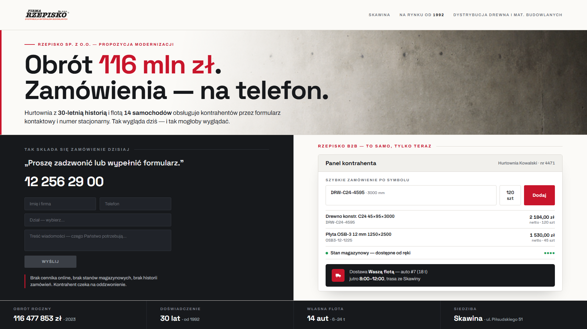
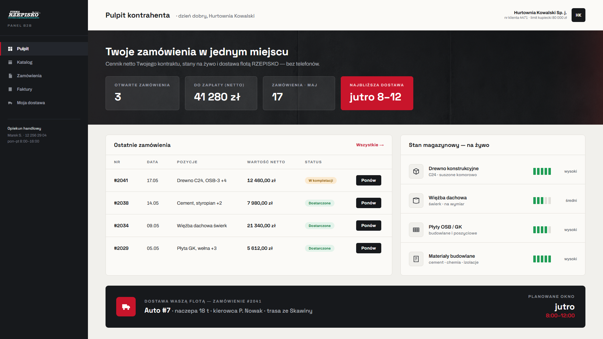
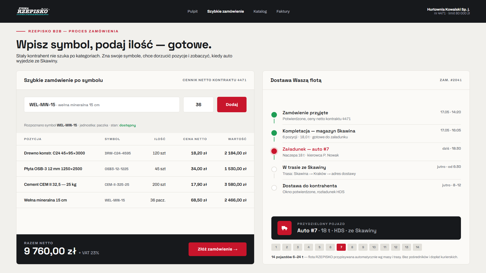
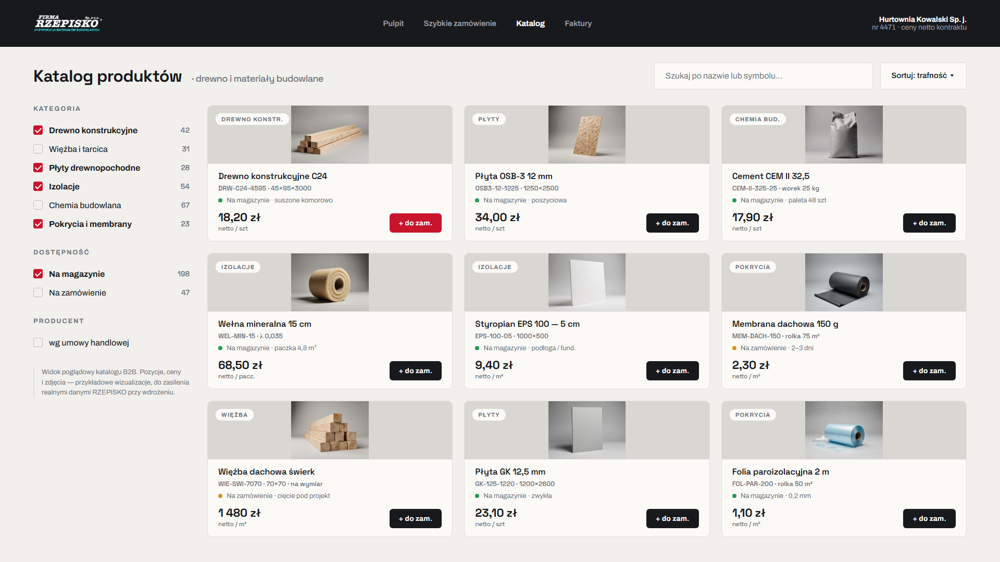

Cztery ekrany pokazujące, jak hurtownia z obrotem 116 mln zł mogłaby przyjmować zamówienia bez telefonów i maili — z cennikiem netto kontrahenta, stanami na żywo i dostawą Waszą flotą 14 aut.

1 · Punkt wyjścia. 116 mln zł obrotu, a zamówienia składane telefonem i formularzem — i jak to mogłoby wyglądać.

2 · Pulpit kontrahenta. Historia i ponawianie zamówień, ceny netto kontraktu, stany magazynowe na żywo, najbliższa dostawa.

3 · Szybkie zamówienie + flota. Zamówienie po symbolu w sekundy oraz śledzenie dostawy Waszym autem ze Skawiny.

4 · Katalog B2B. Drewno i materiały budowlane z symbolem, ceną netto i dostępnością. Pozycje i zdjęcia poglądowe — do zasilenia realnymi danymi RZEPISKO przy wdrożeniu.
Materiał poglądowy przygotowany dla RZEPISKO Sp. z o.o. Logo i dane firmy ze źródeł publicznych; tła i zdjęcia katalogowe to wizualizacje. Niezobowiązująco — pokazujemy kierunek.